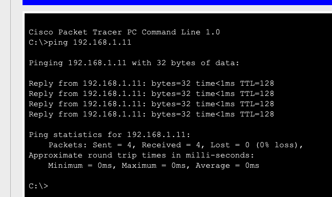

🔧 Adım Adım STP Onarım Süreci
Bu rehber, Spanning Tree Protocol döngü problemlerinin tespit edilmesi ve çözülmesi için izlenmesi gereken adımları detaylı olarak açıklamaktadır.
🖼️ Çözüm Sonrası: STP Düzgün Çalışıyor
STP doğru şekilde yapılandırıldıktan sonra, ağdaki döngüler engellenerek normal iletişim sağlanır. Aşağıda STP'nin aktif olduğu durumda ping testinin başarılı olduğu görülmektedir:

Resim 1: STP etkinleştirildikten sonra başarılı ping testi
Packet Tracer Çözüm Dosyaları:
- stp_solution.pkt - Çözüm sonrası çalışır durum
- stp_normal.pkt - Normal STP çalışma örneği
Adım 1: Döngü Probleminin Tespiti
1A
Ağ Performans Problemlerini İzleme
STP döngüsü durumunda ağda broadcast storm oluşur ve ping testleri başarısız olur veya çok yavaş yanıt verir.
# Döngü durumunda ping testi
PC-A> ping 192.168.1.11
Request timed out.
Request timed out.
# Broadcast storm nedeniyle iletişim kurulamaz
1B
STP Durumunu Kontrol Etme
Switch'lerde STP durumunu kontrol ederek problemi tespit edin.
Switch# show spanning-tree
# STP devre dışıysa tüm portlar forwarding olacak
Switch# show spanning-tree summary
Switch is in pvst mode
Adım 2: STP Yapılandırmasını Düzeltme
2A
STP'yi Etkinleştirme
Tüm switch'lerde STP'nin etkin olduğundan emin olun.
Switch(config)# spanning-tree mode pvst
# PVST+ modunu etkinleştir
Switch(config)# spanning-tree vlan 1
# VLAN 1 için STP'yi etkinleştir
2B
Root Bridge Belirleme
En uygun switch'i root bridge olarak yapılandırın.
Switch(config)# spanning-tree vlan 1 root primary
# Bu switch'i primary root olarak ayarla
Switch(config)# spanning-tree vlan 1 priority 4096
# Alternatif: Manuel priority ayarlama
Adım 3: STP Convergence ve Doğrulama
3A
STP Convergence Bekleme
STP'nin yeniden hesaplamasını bekleyin (30-50 saniye sürebilir).
Switch# show spanning-tree
VLAN0001
Spanning tree enabled protocol ieee
Root ID Priority 32769
Address 0060.4775.7CE0
This bridge is the root
Bridge ID Priority 32769
Address 0060.4775.7CE0
Interface Role Sts Cost Prio.Nbr Type
---------------- ---- --- --------- -------- --------------------------------
Fa0/1 Desg FWD 19 128.1 P2p
Fa0/2 Desg FWD 19 128.2 P2p
3B
Nihai Bağlantı Testi
STP convergence tamamlandıktan sonra ping testlerinin başarılı olduğunu doğrulayın.
PC-A> ping 192.168.1.11
Reply from 192.168.1.11: bytes=32 time=1ms TTL=128
Reply from 192.168.1.11: bytes=32 time=1ms TTL=128
# STP döngüyü engellediği için ping başarılı
🎯 Packet Tracer Lab Özeti
📁 Lab Dosyaları:
- Problem Dosyası: stp_problem.pkt - STP devre dışı, döngü var
- Normal Durum: stp_normal.pkt - STP etkin, normal çalışma
- Çözüm Dosyası: stp_solution.pkt - Çözüm sonrası
Lab Hedefleri:
- STP döngü problemlerini tespit etme
- Broadcast storm etkilerini gözlemleme
- STP yapılandırmasını düzeltme
- Root bridge seçimi ve port rollerini anlama